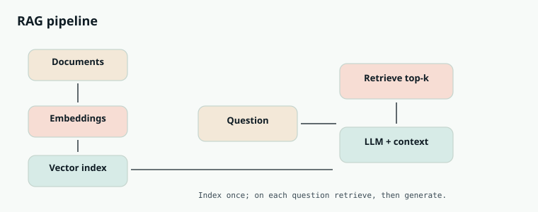

AI Engineering
Chapter 37
RAG

K N O W L E D G E A N D M E M O R Y
generation
A model only knows what was in its training data and what fits in the context window. RAG fixes both. It fetches the most relevant pieces of your own data at question time and drops them into the prompt, so the model answers from fresh, private knowledge instead of guessing, and can even cite its sources.
Indexing, done ahead of time Vector DB Documents Chunks Embed stores meaning top-k search Query, at question time Model Top chunks Question Embed answer using them most similar Documents are chunked and embedded ahead of time. A question retrieves the closest chunks and feeds them to the model.
How it works, in two phases
First, indexing, done ahead of time. You split your documents into chunks, turn each chunk into an embedding (a vector of numbers that captures its meaning), and store those vectors in a vector database. Chunks with similar meaning end up close together in that vector space.
Then, at query time, you embed the user's question the same way, search the vector database for the chunks whose vectors are closest to it, and paste those chunks into the prompt as context. The model then answers using that retrieved text. The quality of what you retrieve decides the quality of the answer, so retrieval is the heart of RAG.
def answer_with_rag(question, vector_db, client):
q_vec = embed(question) # same embedder as
indexing
chunks = vector_db.search(q_vec, top_k=5) # nearest chunks by
meaning
context = "\n\n".join(c.text for c in chunks)
prompt = f"""Answer using ONLY the context below. Cite the source ids.
Context:
{context}
Question: {question}"""
resp = client.messages.create(
model="claude-sonnet-4-5", max_tokens=500,
messages=[{"role": "user", "content": prompt}],
)
return resp.content[0].text
E M B E D D I N G S A N D V E C T O R S E A R C H , P L A I N L Y
An embedding turns a piece of text into a point in a high dimensional space where nearness means similar meaning. So "how do I reset my password" lands near a support article about password resets, even if they share no exact words. Vector search is just finding the nearest points to your question, which is why RAG retrieves by meaning rather than keyword.
PROS CONS Answers from fresh, private data the Bad retrieval means a confident but model never trained on wrong answer Fewer hallucinations, since the model is Chunking and embedding choices grounded in real text strongly affect quality You can show citations back to the Retrieved text still competes for the source chunks context budget Cheaper and faster to update than Adds a vector database and a pipeline retraining the model to maintain
Going Deeper
Why retrieval quality is the whole game
RAG lives or dies on what you retrieve, because the model can only answer from the chunks you hand it. Two levers dominate. Chunking decides how documents are split: chunks too large dilute the relevant sentence, too small lose context, so a sensible size with a little overlap matters a lot.
Retrieval decides what comes back: pure vector search finds semantic matches, but combining it with keyword search (hybrid search) and then re ranking the top results with a stronger model catches cases where meaning and exact terms both matter. Get retrieval right and the generation step is easy; get it wrong and no prompt can save the answer. retrieve the nearest by meaning Q Q = question, teal = relevant chunks nearby, grey = irrelevant chunks far away Embeddings place text so that similar meaning sits close together, so retrieval is just finding the nearest points to the question.
| RAG | Fine-tuning | |
|---|---|---|
| Best for | fresh or private facts, citations | changing style, format, or behavior |
| Update cost | cheap, just re index | expensive, retrain |
| Risk | bad retrieval gives wrong facts | can forget or drift |
| STEP BY STEP RAG has two phases: build the index once, then use it on every question. |
S T E P B Y S T E P
RAG has two phases: build the index once, then use it on every question.
Ask the model to answer using only that context, and return the answer with citations.